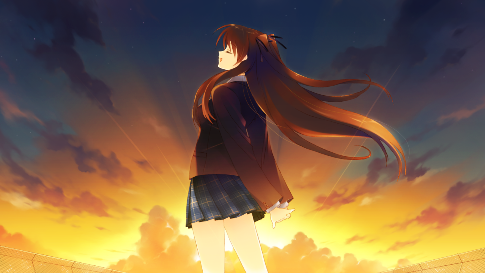
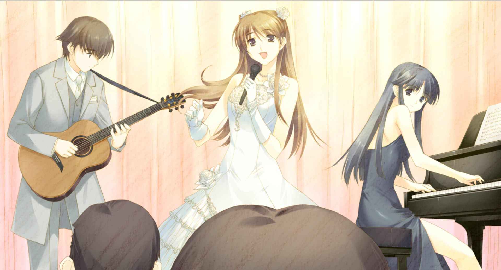
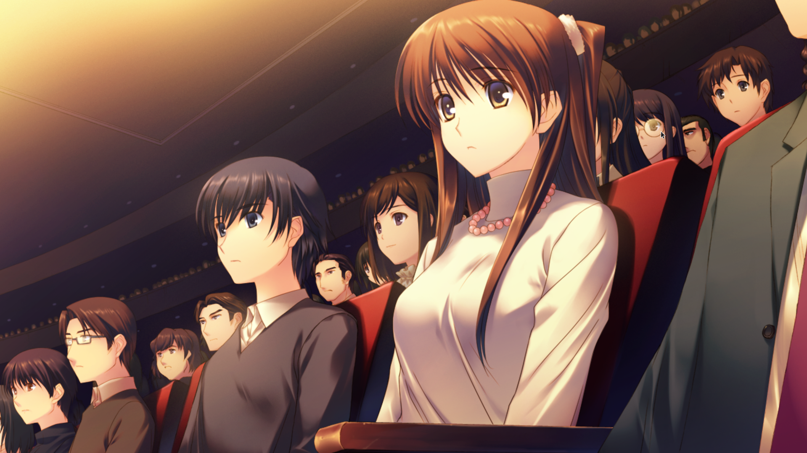
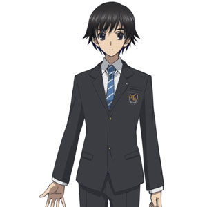
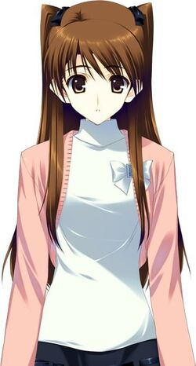
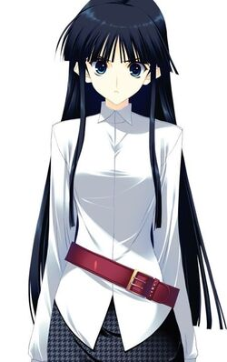

White Album 2 (ホワイトアルバム2, Howaito Arubamu 2)
is a trilogy of Japanese visual novels developed by
the visual novel company Leaf for the Microsoft Windows PC,
and is the sequel to Leaf's earlier visual novel, White Album.
The first part of the series,
named White Album 2: Introductory Chapter,
was released on March 26, 2010.
The second part in the series is named
White Album 2: Closing Chapter and was
released on December 22, 2011.
An all-ages PlayStation 3 version combining
both chapters published by Aquaplus was released in 2012
and ported for PlayStation Vita in 2013.
A White Album 2 - Mini-After Story epilogue
was released for Windows in 2014. White Album 2:
Extended Edition, combining both chapters and the
epilogue was released in 2018, also for Windows.
The gameplay of White Album 2 follows a linear plot
line which offers pre-determined scenarios with courses of
interaction. An anime television
series adaptation aired in Japan between October and December 2013.



Characters Setting

Haruki Kitahara
The protagonist of White Album 2.
He is a third year student at Hōjō High School
and a member of the light music club and has excellent grades.
He dates and loves Setsuna, but eventually Kazusa Touma shows her
true feelings for him, and Haruki reveals that he loves her too.
Haruki plays second guitar. A student with excellent
grades, who's meddlesome and preachy. Lately he's been
concentrating on practicing the guitar for
the school festival, but he's not talented enough to go on stage.

Setsuna Ogiso
Setsuna Ogiso is the first main heroine.
She is the triggering of the plot and the only
character with an important role in all the routes,
even more than Haruki himself. Setsuna is a third year
student at Hōjō High School and has been Miss Hōjō two
years in a row and enjoys singing karaoke. She is beautiful
and friendly when approached, yet places a wall between herself
and others so she has no close friends. She refrains from making friends
due to her troubled past during her years in middle school. However,
she is this way precisely because she was consecutively voted as the
prettiest girl in the school,
and her classmates all expect her to be a fashionable, wealthy young lady.

Kazusa Touma
Kazusa Touma is the second main heroine.
She is a third year student at Hōjō and is in the
same class as Haruki. She often dozes off in, is late for,
and skips class. She is a very talented pianist, and comes
from a wealthy family. Kazusa is the daughter of a famous
pianist, and a musical genius who dropped out of Hōjō's music
division. She is particularly annoyed with Haruki, who has
been persistently pestering her for the past half year.
However, once Haruki befriends her, she is a valuable ally
for the cultural festival. When it comes to music, her
passion and confidence is unrivaled.